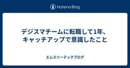

エムスリーテックブログ
https://www.m3tech.blog/
エムスリー(m3)のエンジニア・開発メンバーによる技術ブログです
フィード

サプライチェーン攻撃に怯えたくないので、パッケージを「寝かせる」プロキシを自作した 29
29
エムスリーテックブログ
こんにちは、セキュリティチームの坂梨です。 皆さん、ソフトウェアサプライチェーン攻撃対策はできていますか。 2025年の Shai-Hulud（大規模なnpmパッケージ侵害事件）以降、ソフトウェアサプライチェーン攻撃が話題に挙がる機会が増えました。特に今年3月末に発生した Trivy と axios の事件は大きく騒がれ、影響調査に追われた方も多いのではないでしょうか。 4月以降も lightning や TanStack などメジャーなライブラリが被害に遭っており、毎朝「さて今日は何が乗っ取られたのかな」とニュースを見る日々を過ごしています。 ライブラリが侵害されるたびに影響調査をするのは大…
4日前

デジスマチームに転職して1年、キャッチアップで意識したこと
エムスリーテックブログ
【デジスマ ブログリレー 4日目】 こんにちは、デジスマチームの東です。 2025年5月にエムスリーへ転職し、医療DXサービス「デジスマ診療」を開発するデジスマチームに加わって1年が経ちました。この記事では転職後の1年間を振り返り、転職直後のキャッチアップで意識したことやデジスマチームについて紹介します。
8日前

いま一番好きなエディタ、Zed
エムスリーテックブログ
【デジスマ ブログリレー 3日目】 デジスマチームの立花です。 突然ですが皆さんはどのエディタが好きでしょうか。 僕は Helix が好きでよく使っているのですが、 最近また好きなエディタが増えました。Zedです。 zed.dev 動作の軽快さに惹かれて使い始めたのですが、触っていくうちに「これは便利だな」と感じる機能がいくつもあったので、 本記事ではその中から特に日々の開発で役立っているものを紹介します。
9日前
apple/container で worktree 並行開発を快適にするツールを作ってみた
エムスリーテックブログ
先月マルタ共和国へ旅行に行った時の風景です。本記事とは無関係です。 【デジスマ ブログリレー 2日目】 デジスマチームの田口です。 最近 apple/container という Apple 純正の Linux コンテナサポートツールが v1 として正式リリースされました。軽量 VM ベースということで興味があり、これを使って何か面白いものを作れないかと色々触っていました。 ちょうど普段 Claude Code を claude --worktree で複数ブランチ並行で動かしていて、ブランチごとのローカルサーバの取り回しが地味な課題として残っていたので、apple/container の特徴を…
11日前
Istio VirtualServiceで Kotlin → Go への安全な引っ越し
エムスリーテックブログ
週末に訪れた男木島灯台。今年1月に重要文化財に指定されました。本記事とは無関係です はじめに 【デジスマ ブログリレー 1日目】 こんにちは、デジスマチームの 伴 です。 デジスマ診療は、患者さんの予約や問診、決済まで一連の機能をワンストップで提供することで患者さんだけでなく受付、医師もラクになる新しい医療体験を提供しています。 www.youtube.com 普段は主にインフラ周りを担当しており、Kubernetes のメンテナンスなどをしていますが、現在は API の Go 化も進めています。 本記事では、Kotlin (Spring Boot / JVM) から Go へのサーバー実装書…
14日前
医療保険を関数型ドメインモデリングしてみよう
エムスリーテックブログ
【デジカルチーム ブログリレー 4 日目】 こんにちは、デジカルチームでソフトウェアエンジニアをしている穴繁です。 私は、医療ドメインへのディープダイブが時に求められるクラウド型電子カルテというプロダクトの開発に携わっています。 そのため、この複雑な医療ドメインをどうやったら美しく、安全にコードに落とし込めるのだろうかと悩む機会が多いです。 そんな中、関数型ドメインモデリング という書籍と出会い、これはいいアプローチかもしれないと感じました。 ということでこの記事では、比較的皆さんも馴染みがあるであろう「医療保険」を題材に、書籍の中でも特に型によるドメインモデリングに焦点を当ててそのメリットを…
16日前
PRごとに検証環境が立ち上がる仕組みをTerraform × GitHub Actionsで作った話
エムスリーテックブログ
TerraformとGitHub Actionsを使って、PRごとに検証環境が立ち上がり、誰でも簡単に確認できる仕組みを実装しました。
17日前
BigQuery のテーブルをコピーすると有効期限が引き継がれる場合があるから気をつけろ！
エムスリーテックブログ
【デジカルチーム ブログリレー 2 日目】 クラウド型電子カルテデジカルチームの井上 (@wtr_in) です。 言いたいことはタイトルでほぼ言い切ってしまいましたが、先日 BigQuery 上のデータをうっかり消してしまいそうになる事件がありました。原因はテーブルコピーに関する細かい仕様の勘違いだったのですが、もしかすると今後同じようにハマる人もいるかもしれないので、せっかくなので書き残しておきます。
21日前
Scalaしか書かなかったエンジニアが育休1年から復帰してReactを書いている話
エムスリーテックブログ
【デジカルチーム ブログリレー1日目】エムスリーエンジニアリンググループ、デジカルチームの安江です。Scalaとマミさんが好きです。 双子が生まれ、1年間の育休を取りました。育休中に新しいチャレンジについて打診があり、自分でも希望してデジカルチームへ異動。この春に復帰したのですが、想像以上のギャップが待っていました。 この記事では「1年間のブランクからどう復帰したか」にテーマを絞って書きます。これから育休を考えている方、長期の離脱からの復帰に不安を感じている方の参考になれば幸いです。 育休中の技術との距離感 復帰したら何もかもが違った Claudeのおかげで未経験領域を突破した チームの力 変…
24日前
複数iOSアプリの証明書運用を一元化するための継続的改善
エムスリーテックブログ
【マルチデバイスチーム ブログリレー6日目】 エンジニアリンググループ マルチデバイスチームの藤原です。 私たちのチームでは10近いiOSアプリを開発しています。各アプリには専任の開発者がおり、プロビジョニングプロファイルは fastlane match を使ってGitリポジトリで管理しています。 しかし、アプリごとに fastlane match の運用環境が独立していたため、テストデバイスの追加や証明書更新のたびに各担当者へ作業を依頼する必要がありました。さらに、スクリプトの配置や実行手順がアプリ間で微妙に異なることから、担当者以外が対応するには認知負荷が高いという課題を抱えていました。 …
25日前
Android CLI と ADB を使って Android 実機 / エミュレータを操ってみる
エムスリーテックブログ
【マルチデバイスチーム ブログリレー5日目】 マルチデバイスチームの小林(@bakobox)です。 2026年4月に Android CLI が公開されました。プロジェクトの作成から実機デバイス / エミュレータの操作までを行える CLI で、AI エージェントによるアプリ開発の操作を容易にすることを目的に開発されています。 この Android CLI と、昔からある ADB コマンドの使い方を AI エージェントに教えるだけで、公式ツールのみで Android 実機 / エミュレータを操作できます。 本記事では、Android CLI と ADB を使って Android 実機 / エミュ…
1ヶ月前
アプリ開発チームに転職して感じたこと
エムスリーテックブログ
【マルチデバイスチーム ブログリレー4日目】 こんにちは、マルチデバイスチームでモバイルアプリエンジニアをやっている八箇です。 2025年9月にエムスリーに転職して9ヶ月が経ちました。開発環境や文化の違いにもようやく慣れてきたところです。 昨年（2025年）はモバイルアプリの開発業務以外にも、iOSDC, DroidKaigi, FlutterKaigi, およびKotlin Festの4つのカンファレンスで弊社ブースのお手伝いをさせていただきました。 iOSDCのブースでの写真 入社直後だったためサポートを受けながらではありましたが、入社前の客観的な視点と、入社後実際に目にしたチームの様子、…
1ヶ月前
ファイルサイズの大きなAndroidアプリを配信する技術
エムスリーテックブログ
【マルチデバイスチーム ブログリレー3日目】 エンジニアリンググループ マルチデバイスチーム（iOS/Androidアプリの開発を担当）の渡辺です。 マルチデバイスチームで開発している「臨床ポケット」アプリは、医師が臨床現場で行う判断をエビデンスに基づいて支援するアプリです。 実際の医療現場ではスマホの通信状況が芳しくないことも多く、インターネットに接続できる前提だといざというときに利用ができない場合があります。 臨床ポケットではあらかじめ必要なデータをアプリにバンドルしておくことで、オフラインでの利用を可能にしました。 iOSアプリの開発時は何も問題なくアプリをリリースできましたが、Andr…
1ヶ月前
【2026年最新】JetBrains Junie vs Claude Code！AIエージェントの使い分け実践ガイド
エムスリーテックブログ
【マルチデバイスチーム ブログリレー2日目】 エンジニアリンググループ マルチデバイスチームの田根です。 日本最南端の波照間島のニシ浜にはウミガメがいっぱい 私は主に IntelliJ IDEA を使って開発しているので、AIエージェントは JetBrains Junie をメインで使っています。 Claude Code も IntelliJ IDEA のプラグイン Claude Code [Beta] - IntelliJ IDEs Plugin | Marketplace があり、IntelliJ IDEA 上で動かせます。 今回は、この両者を実際の開発プロジェクトでガッツリ使い倒して分か…
1ヶ月前
エムスリーテクノロジーズのiOSアプリ大規模リファクタリング事例
エムスリーテックブログ
【マルチデバイスチーム ブログリレー1日目】 エンジニアリンググループ・マルチデバイスチーム(以下「マルデバ」)の星野です。 私は普段マルチデバイスチームに所属し iOS/Android アプリの開発をしていますが、同時にエムスリーテクノロジーズにも出向という形で在籍し、グループ会社においてもモバイルアプリの開発・支援をしています。 今回は、現在私が進めているグループ会社のモバイルアプリのリファクタリング事例をご紹介し、エムスリーテクノロジーズにおける業務の様子をお伝えできればと思います。 リファクタリングイメージ図
1ヶ月前
distrolessコンテナイメージ使おうとして依存が足りないときはどうすればいいですか？あ、OCamlなんですけど。
エムスリーテックブログ
この記事は基盤開発チームブログリレー4日目の記事です。 こんにちは、エンジニアリンググループ基盤チームリーダー兼General Managerの横本(@yokomotod)です。 ありのまま今起こった事を話すぜ…おれは基盤チームブログリレーを走ると思っていたらいつのまにかOCamlブログリレーだった… 何を言ってるのかわからねーと思うがおれも何をされたのかわからなかった…頭がモナドになりそうだった… www.m3tech.blog www.m3tech.blog www.m3tech.blog 3日間、Web・CLI・機械学習と OCaml で攻め続ける先人達により、OCaml デビューする以…
1ヶ月前
OCamlでLightGBMを動かして機械学習してみた
エムスリーテックブログ
長女と2人ポケパーク、世代を超えて愛されるものを作れるってすごいよね はじめに こんにちは、エムスリー株式会社 業務執行役員 VPoE 兼 基盤チーム チームリーダーの河合(@vaaaaanquish)です。 この記事は「基盤開発チーム ブログリレー3日目」の記事です。 先日、基盤チームで「うちもブログリレーやろう！」と盛り上がりまして、「いいね！私も書こうかな！」と気軽に思っていたのですが、何故か1日目と2日目の記事がOCamlの記事になっており「それをやられたらビッグウェーブに乗るしかないが…？」ということで私もOCamlで機械学習をやりました。 つまり本記事は、気合いと根性のやってみた記…
1ヶ月前
CLIツール開発言語として OCaml を使ってみている
エムスリーテックブログ
基盤開発チームブログリレー2日目の記事です。 1日目は田尻さんがOCamlについて書いてくれました。そのOCaml熱にあおられ私も仕事で使い始めたので、私も便乗してOCamlについて書いてみます。 www.m3tech.blog 覚醒したラクダ はじめに OCaml、書いてますか。私も書いています。仕事の補助ツールとして。 こんにちは、基盤開発チームの林です。 以前まで、ちょっとしたCLIツールを作る言語としては、簡潔に書ける Ruby を使うことが多かったのですが、最近はAIエージェントをよく使うようになったこともあり、自分用のCLIツール開発には OCaml を使うようになりました。 もと…
1ヶ月前
OCaml Web App Development 2026
エムスリーテックブログ
【基盤開発チーム ブログリレー1日目】の記事です。 記事とはなんの関係もない自作の苔テラリウム OCaml、書いてますか。私は書いています。仕事として。 そんな話の詳細は今年の関数型まつり 2026 で話すとして、今回は「実際、OCaml で Web やれんの？」という疑問にお答えしようと思います。 実際に利用しているものから、なんとなく良さそうなものまで、Web アプリ開発の文脈で必要になりそうなものをさらっていきます。 この記事を見て、ぜひ、OCaml で Web アプリ開発にチャレンジしてみてください！
1ヶ月前
AIコーディングはQAチームに何をもたらすか——理解負債・技術負債・認知負債との向き合い方
エムスリーテックブログ
【QAチーム ブログリレー7日目】の記事です。 はじめに 前提：なぜPlaywrightへ移行したか 「まずコードを書けるようになろう」は諦めた 5つのステップで開発フローへ Step 1: Claude Codeに慣れる Step 2: シナリオを「読む」 Step 3: VS Code Codegenを使う Step 4: mablシナリオの移行ができる Step 5: 積み重ねで改良・省力化へ 現在地 AIだけでは足りなかった：地道な活動 レビューでテストの意図を確認する リファクタリングで品質の均一化を図る AI導入と同時に向き合っている3つの負債 1. 理解負債：AIが書いたコードを…
2ヶ月前
iOSビルドの凡ミスから学ぶ、FlutterのビルドキャッシュとAOTコンパイルの仕組み
エムスリーテックブログ
ソフトウェアエンジニアの末永です。私は個人開発でFlutter製のモバイルアプリを開発しています。このアプリを開発している中でアプリのビルド周りでハマってしまったことがあり、その際ビルドシステムに関してしっかりと調査しました。この記事はその調査の際に書いたものです。*1 なお、本記事は次のバージョンを対象とした内容となっています。 Flutter: 3.38.0 Dart: 3.10.0 また、ビルド対象はiOSとAndroidのモバイルアプリのみとします。 *1:私は業務ではFlutterアプリの開発をしておらず、あくまで個人開発での経験に基づく内容です。
2ヶ月前
ICLR2026が開催中なので、エムスリー AI・機械学習チームの推し論文を勝手に紹介するぜ！
エムスリーテックブログ
こんにちは。エンジニアリンググループのAI・機械学習チームに所属している鴨田 です。弊チームでは毎週1時間の技術共有会を実施しており、各自が担当するプロダクトの技術や、最近読んだ論文を紹介しています。今週はICLR2026が開催されていることもあり、同学会の論文読み会となりました。1セッションにつき1名が担当し、各自が選定した論文の詳細について解説しました。本ブログではその一部として、セッションごとの「推し論文」を紹介します。 まだ読んでいない方は前回のAAAI2026の輪読会ブログも是非ご覧になってください www.m3tech.blog ICLR 2026からトップページバナーを引用
2ヶ月前
PlaywrightとClaude Codeでやってみよう、手軽に始めるテスト自動実行
エムスリーテックブログ
【QAチーム ブログリレー6日目】の記事です。 はじめに こんにちは。エンジニアリンググループ QA （QualityAssurance） チームの中塚です。 2週間ほど前からバジルの水耕栽培にチャレンジしていて、少しずつ大きくなる双葉を見守るのが毎朝の楽しみです。肥料を溶かした水だけで本当にあんなに大きく育つのか？自由研究の気分で楽しく観察しています。 画像はAI（Gemini）により生成されたイメージです。このブログ記事の内容から生成してもらいました。バジルの鉢植えもあってかわいい！ さて、私は普段コンシューマ向けサービス全般のQAの設計、実施、計画、その他諸々の活動をしています。 その中…
2ヶ月前
Playwright移行を自律化。Claude Codeで実現するマルチエージェント設計
エムスリーテックブログ
【QAチーム ブログリレー5日目】の記事です。 こんにちは。エンジニアリンググループ QAチームの須賀です。 最近エムスリーに復帰しました。 私は2月1日に入社してからQAエンジニアも使い放題のClaude Codeを用いてmabl（ノーコードのE2Eテストツール）の自動テストをPlaywrightにリプレースしています。 AIエージェントを用いた開発は未経験だったため、最初は期待するコードをなかなか生成できず試行錯誤の連続でした。しかし、最近では人の介入なしで期待するコードが生成できることも増えてきました。 試行錯誤の結果、AIエージェントの活用において重要だったのは、実は『人間同士が円滑に…
2ヶ月前
仕様の文体はAIテスト生成に影響するか？クノー『文体練習』に倣って実験
エムスリーテックブログ
【QAチーム ブログリレー4日目】 はじめに こんにちは、QAチームの草場です。 レーモン・クノーの『文体練習』という本をご存知でしょうか？ 1947年に出版されたこの本は、とある短い１ストーリーを99通りの文体で書きわけるもので、語られるのは同じストーリーなのに文体を変えるだけで得られる情報や印象の変化を感じられる味わい深い本です。 今回は「文体練習」を参考に、システムの仕様を表す文体として最適なものは何か？ もしくは文体による差は無いのか？をカジュアルに実験してみました。 仕様は、書き手や場面によって様々な文体で書かれることがあります。決められた書式で厳密に書かれた物、広く知られた記法では…
2ヶ月前
QAエンジニアがClaude Codeを半年間使って気づいたこと 〜テスト自動化74%高速化を実現した3つの技術アプローチ〜
エムスリーテックブログ
TL;DR 背景と課題 なぜClaude Codeを選んだのか 課題1: テスト実行時間の長さ 何が問題だったのか 解決アプローチ 1. 待機処理の最適化 2. Page Objectパターンの徹底 3. 並列実行の自由度向上 結果 課題2: ワークフロー自動化の余地 何が問題だったのか 解決アプローチ MCP（Model Context Protocol）による外部ツール連携 カスタムスキルによるワークフロー定義 結果 課題3: テストの保守性と安定性 何が問題だったのか 解決アプローチ 1. CI/CD認証パターン 2. 環境依存テストの「警告扱い」パターン 結果 実績サマリー 半年間のコ…
2ヶ月前
Playwright移行を支えるClaude Agentシステム - AI+ツールで品質を担保する
エムスリーテックブログ
こんにちは。エンジニアリンググループ QA （Quality Assurance） チームの津向です。 2月に入り、暖かくなってきたのでBBQをしたのですが、ピンポイントで降雪になり、雪の中で肉を焼くという稀な経験をしてきました。 後日、元プロテニス（現スポーツキャスター）の方が国内不在と知りました。 そんなわけでQAチームブログリレー2日目になります。 お肉は焼くことで美味しくなると言われています。 はじめに 1. エージェントの２層構造 専門エージェントの役割分担 逐次処理による「AIのコンテキスト過負荷」防止 2. 標準化を担う生成エージェント ナレッジベースによる標準化 共通パーツの再…
3ヶ月前
Firebase MCP × Claudeでアプリクラッシュ解析をSlack通知する
エムスリーテックブログ
【QAチーム ブログリレー1日目】 こんにちは。マルチデバイスチームQAエンジニアの前川です。 新国立のテート展のダミアン・ハースト、久しぶりにホルマリン漬け来るか！の期待に対しての無難なオフィス机の展示にちょっぴり落胆した春先です。 最近LAでクラブよりも午前中のコーヒーパーティが流行っているらしいです。夜＆酒の脳コンディションよりもシラフで冴えた頭への社交シフトがビジネスやクリエイティブ層で強まっている。密度と精度、スピードが重視されるAIの普及が、コミュニケーション指向へも影響していると取れなくもないと思えます。 画像はAI (Gemini）により生成したイメージです はじめに 消えるこ…
3ヶ月前
23年続くOSSの、9年越しのバグが直るまで
エムスリーテックブログ
AI・機械学習チームブログリレー15日目の記事を三浦 (@mamo3gr) がお送りします。前日は須藤さんによるClaude Codeと安全に付き合うためのサンドボックス機能の検証でした。 www.m3tech.blog 私は先月まで半年間の育児休業を取得していたのですが、復帰してからというもの、AIエージェントの進化とそれに伴う開発プロセスの様変わりにびっくりしています。日進月歩の変化にキャッチアップしなくては…、と危機感を募らせつつ、今日は20年以上も続く老舗ソフトウェアへのコントリビュートに挑戦したエピソードを通して、ちょっとだけ世界を良くするために小さなことでも始めようよ、という話をし…
3ヶ月前
AIエージェントを安全に使い倒すには？Claude Codeのサンドボックス機能を試してみた
エムスリーテックブログ
こんにちは、AI・機械学習チームの須藤です。 この記事はAI・機械学習チームブログリレー14日目の記事です。 13日目は田中さんによる「スタートアップCTOが、M3のAIチームに転職して3か月。感じた不安と、その答え。」でした。 www.m3tech.blog 突然ですが、私は今年に入ってからランニングを始めました。1月頃はキロ8〜9分ペースで2〜3km走るのがやっとでしたが、毎日続けているうちに最近はキロ4分台で走れるようになり、20km程度であれば走れるようになってきました。今年の目標はマラソン大会に出場することです。継続は力ですね。 最近買ったadizero evo sl woven。A…
3ヶ月前